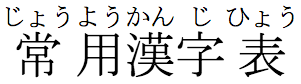
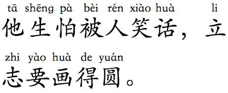
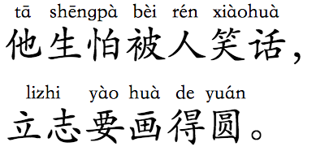
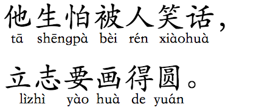
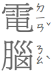
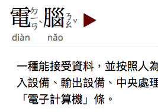
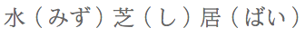
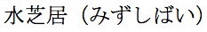
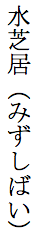

Ruby is a name given to the small annotations, typically used in Japanese, Chinese and Traditional Mongolian content, that are rendered alongside base text, usually to provide a pronunciation guide, but sometimes to provide other information.
The term 'ruby' was adopted into Japanese typesetting after originally being used for British printing. In China these may be called 'interlinear annotations'. In this article we use the word 'ruby' to refer to the combination of 'base characters' plus their 'annotations'.
We will assume that you are familiar with ruby, and how you want it to look. (If not, see the short overview of how ruby works.)
This article will only discuss how to use CSS styling to affect the rendering of ruby content. For information about how to create the markup needed to support ruby, see Ruby Markup.
Rather than simply reproducing the spec itself here, we provide task-oriented guidance to help content authors achieve key techniques. We make the assumption that content authors know what they want to do, and this article helps them understand how to do it.
Note that some of the technologies described here are still under development, and browser adoption is only partial at best. In what follows we will describe what you should do when the CSS specification is properly implemented by browsers, and also describe what currently works and doesn't work.
We will refer to the following CSS properties. For links to the CSS specifications click on the property name.
ruby-position: [ alternate || [ over | under ] ] | inter-character
ruby-align: start | center | space-between | space-around
Although authors will usually jump directly to the task they need from the table of contents, the following provides a brief overview of the current state of implementation across the page as a whole.
Positioning annotations above, below, or between bases. Modern browsers reliably support positioning of ruby text above or below base text using CSS. Bopomofo (zhuyin fuhao) ruby alignment (to the right of the base) is not supported by any browser.
Inline alignment of annotations. The basic alignments, start, center, space-between, and space-around are interoperably supported. Use of ruby-merge for jukugo ruby is not supported. Overhanging ruby text has mixed support across the 3 main browser engines.
Adding parentheses to inline annotations. Although tabular markup is not widely supported for normal display of ruby text, inline rendering of ruby does work, whether the markup is interleaved or tabular. It is also possible to use CSS to put parentheses around inline ruby text in all browser engines.
Handling gaps in annotations. Although leaving an rt element blank works for all browsers for normal rendering, it doesn't work well for inline rendering. The better alternative of automatically hiding ruby text that is the same as the base text is currently only supported by Gecko browsers.
Basic configurations
This section describes typical scenarios for Japanese and Chinese. The expected behavior is based on the layout requirements documents for Japanese (JLReq) and Chinese (CLReq). Only the more common configurations are described here; subsequent sections will explain how to produce these configurations, and how to tailor the results.
What follows assumes that you have used markup to map ruby text annotations to base characters appropriately, as described in the article Ruby Markup.
Japanese
Mono ruby is typically used to represent pronunciation of Japanese kanji characters. Each ideographic base character is mapped in markup to an annotation that indicates how to pronounce it (usually using hiragana).
As you can see in the following example, the annotations don't overlap adjacent kanji characters, and they are normally centred relative to the base character (in Japanese this is called nakatsuke). Lines can break between the base characters.

Typical Japanese ruby.
If the annotation doesn't fit over the base character you can expect one of the following things to happen.
If the character alongside is a kanji character, the base characters will be spaced a little wider so that the ruby text doesn't overlap.
If the character alongside is punctuation or kana, the annotation will overlap it up to a certain point.
If the base character is next to the line start or end, a little extra space will be added alongside the base character so that the annotation doesn't stick into the margin.
This behaviour is currently browser dependent, rather than specified using CSS.
A jukuji annotation occurs where a sequence of base characters has a different pronunciation from what you would expect by looking at the individual base characters, eg. 田舎 (pronounced いなか). Because the kana don't map to individual base characters, you will need to use group ruby: a single annotation is mapped in markup to a range of base characters. The kana annotation is normally spread across the base text evenly, with a little extra space at either end. If the annotation is in the Latin script, however, it is normally centred on the base text. Base characters in group ruby are not split across line breaks.
Jukugo ruby (note that this is a different term from jukuji!) is a term used to describe special treatment of annotations for compound nouns (jukugo in Japanese). Essentially the annotations for compound nouns can be spread across all of the base characters in the word, like group ruby, but a word can still be split at the end of a line, like mono ruby. Furthermore, the distribution of the annotations for a word may follow detailed rules with regards to allowable overlaps, so that they are not necessarily equally spaced as per group ruby. See some examples.
Sometimes ruby annotations appear on opposite sides of a base character at the same time. In such cases, the top/right annotation is typically phonetic and uses mono ruby, and the bottom/left annotation is most likely group ruby and provides additional information about the base text.
Annotations and base text may be aligned at the start in vertical text, but are usually centred on the base in horizontal text.
The sections lower down this page indicate how you can change some of these basic styles.
Simplified Chinese
In Mainland China phonetic annotations normally consist of pinyin transcriptions, which are written in the Latin script. Content annotated with pinyin is usually only set horizontally. This is fortunate since Latin text would be set sideways in vertical text, making it harder to read.
There are two common approaches to phonetic annotation: character based and word based.
Character based annotations are common in text used for Chinese children, whereas word based annotations are often found in texts for those learning the Chinese language.
For character-based phonetic annotations, you will need to use markup to map each ideographic base character to an annotation which indicates the pronunciation. This is mono ruby. The annotations usually appear above the base text.

Character-based phonetic annotations using pinyin.
Word based phonetic annotations use group ruby, associating one annotation with more than one base character, and forbidding line breaks inside the annotation. Note how the top line in fig_chinese_group_ruby no longer breaks between the two parts of the word lizhi.

Word-based phonetic annotations using pinyin.
In both of these examples, the annotations are centred above the base text.
Annotations representing meaning or commentaries are common in light novels and translated works, and tend to describe phrases or words. They may contain casing, punctuation, and spaces, and may contain Chinese text explaining Latin base text, or vice versa, and they may appear on the opposite side of the base to phonetic annotations. Sometimes phonetic annotations are also placed below/left of the base.

Word-based phonetic annotations using pinyin placed below the base characters.
As for the Japanese section above, if the annotation doesn't fit over the base character you can expect one of the following things to happen.
Since the annotations are often long, compared to the width of the Han base character, care may need to be taken to ensure that long pinyin annotations don't run into each other. To accomodate this, the tracking of the base text is often increased, to provide additional room. Occasionally, the size of the annotation text may be reduced. There may be some cases where annotations slightly overlap adjacent bases, but only while preserving a minimum space between annotations.
If the annotation is longer than the base and is next to the line start or end, both the annotation and the base text can be aligned with line head or end. A little extra space will be added on the other side of the base character so that the annotation fits.
The syllabic nature of the script makes it fairly easy in most cases to spot the start and end of an annotation, but when adjacent annotations are longer than the base, they should ideally be separated by about a ¼em or ½em space.
In some cases, care may need to be taken to ensure that long pinyin annotations don't run into each other. This can be achieved by increasing the tracking of the hanzi characters or by reducing the size of the annotation text.
Traditional Chinese
In Traditional Chinese, bopomofo (zhùyīn fúhào) ruby nearly always appears to the right of the base character, whether the text is set horizontally or vertically. Furthermore, the bopomofo annotation is always set vertically and the tone marks (apart from the light tone) are displayed in an additional column to the right of the bopomofo characters. The tones are not combining marks, and the vertical position of the tone mark depends on the arrangement of the phonetic symbols in the previous column.

Bopomofo (zhùyīn fúhào) annotations alongside Traditional Chinese characters.
Find more information about Bopomofo usage in Traditional Chinese.
Positioning annotations above, below, or between bases
Here we look at how you make the ruby text appear above or below the ruby base text, or to the side for bopomofo ruby.
A later section will describe how to display the annotation inline, ie. alongside the base with equal-sized characters.
Positioning ruby text 'over' the base
By 'over' we mean above horizontal text and to the right of vertical text.
ruby-position set to over.
This is the default behavior, and you can expect browsers to produce this without CSS.
If you need to place the ruby explicitly in this position, use:
ruby { ruby-position: over; }
Output in your browser:
紙芝居
紙芝居
Does it work? This works well because this is the default rendering for ruby.
Positioning ruby text 'under' the base
To position the ruby text below horizontal base text or to the left of vertical text, use ruby-position: under.
ruby-position set to under.
This position is often used in Japanese for semantic information (as opposed to phonetic labelling). It is also used sometimes for pinyin annotations in Chinese. Here is an example from the moedict dictionary.

An example of ruby on more than one side of the base characters.
To produce this effect, use:
ruby { ruby-position: under; }
Output in your browser:
紙芝居
紙芝居
Positioning bopomofo ruby
In Traditional Chinese, bopomofo (zhùyīn fúhào) ruby appears to the right of the base character, whether the text is set horizontally or vertically. Furthermore, the bopomofo annotation is always set vertically and the tone marks (apart from the light tone) are displayed in an additional column to the right of the bopomofo characters.
Bopomofo ruby is set to the right side, on a character by character basis.
How to do it. Your CSS has to indicate that this will be bopomofo ruby, so that the annotation doesn't appear 'over' or 'under' the base text. To do that, you need the inter-character value of ruby-position.
The vertical placement for the bopomofo and the relative position of the tone characters within the invisible column to the right of the Han base character rely on the browser, or possibly font information. You don't need to specify anything more in CSS.
ruby { ruby-position: inter-character; }
Output in your browser:
電腦
電腦
Does it work? No, no browser engine currently supports rendering of bopomofo ruby. Very simple annotations can look ok in vertical text, because of the default vertical layout, but as soon as tone marks are added things look a mess.
Positioning double-sided ruby
Occasionally, it is necessary to associate more than one annotation with the same base text. In this case, you need to specify which annotation goes where.
Ruby annotations on two sides of the same base text.
This is complicated a little by the fact that there are two possible ways to create markup for double-sided ruby (see the Ruby Markup article for more details).
How to do it. If you use the 'tabular' model of markup, the styling is reasonably straightforward and involves setting ruby-position on the appropriate rtc element. Given markup such as the following:
When the ruby text annotation is longer than the ruby base it belongs to, or vice-versa, there can be several different ways of dealing with the extra space that is lying around. The CSS Ruby spec deals with this mostly through the use of the ruby-align property.
It's best to use this property on the ruby element.
If you are working with inter-character bopomofo ruby, none of this is relevant, since the positioning of the bopomofo characters and tone marks is fixed.
Most examples in this section use the following markup:
<ruby><rb>浮世絵<rt>うきよえ<rb>昔話<rt>むかしばなし</ruby>
Output in your browser with no CSS specified:
浮世絵
Aligning to one edge
This kind of alignment is mostly used for vertical Japanese text. (Horizontal Japanese text more often uses centering.)
Note that, currently, applying this setting doesn't automatically handle certain requirements that may arise with regards to overflow and interaction with line edges in traditional printed text.
How to do it. If you want to align the edges of the annotation and the base, you can use the start value of ruby-align. (An older version of the Ruby CSS spec also included an end value, but that has been removed from the current version of the spec.)
ruby { ruby-align: start; }
Output in your browser:
浮世絵昔話
浮世絵昔話
Does it work? All browser engines now support this value.
Centering shorter items of text
How to do it. Instead of aligning with an edge, if you want the shorter text, whether it is the ruby base or the ruby text, to be centered with the characters set solid, it will hardly come as a surprise to learn that you just need to set the value of ruby-align to center.
ruby { ruby-align: center; }
Output in your browser:
浮世絵昔話
浮世絵昔話
Does it work? All browser engines now support this value.
Applying justification to shorter items of text in group ruby
This section is applicable for group ruby, ie. when both the base and the annotation contain multiple characters.
If you want to use up redundant space by stretching the shorter text, be it the annotation or the base, you have two choices: you can justify the shorter text from edge to edge of the longer one (space-between), or justify across a space that is slightly smaller than the full width available (space-around). Note, however, that the justification outcome differs according to what scripts are involved.
The default setting is space-between.
Justifying Japanese annotations
Let's look first at handling kanji and kana characters in Japanese ruby. This will typically apply for jukuji or semantic annotations.
How to do it. To widen the shorter text so that it is exactly the same width as the longer text, stretching the inter-character spaces equally, use the space-between value of ruby-align.
ruby { ruby-align: space-between; }
Output in your browser:
浮世絵昔話
浮世絵昔話
Or you can stretch the text in the same way, but not quite so far, leaving half a character width of space on either side, as shown here. For this you use the space-around value.
ruby { ruby-align: space-around; }
Output in your browser:
浮世絵昔話
浮世絵昔話
Does it work? Both of these approaches now work for Blink, Gecko, and WebKit browsers. The space-around approach is also the default style for this kind of annotation.
Pinyin & other Latin script annotations
Here we look at what to expect if either the base or the annotation uses a script such as Latin for pinyin while applying the space-between and space-around. For Chinese ruby that doesn't use bopomofo, this is the most likely case. Occasionally, Japanese may also use Latin annotations, in which case the same rules apply.
You should expect the annotation to be centred, as shown below. Space is not distributed between each character, as it is when the annotation uses kana or han characters. If there are spaces in the shorter text, the annotation should still be centred, and the space should have its normal width.
Latin script annotations are centred relative to a longer base.
ruby { ruby-align: space-between; }
Output in your browser:
洗衣机周杰伦
There is no difference in styling for the two example words shown above – we simply removed the spaces from the pinyin on the left.
Does it work? All browser engines centre the Latin annotation when it contains no spaces. However, when a space is present, in both Blink and WebKit browsers the two words are pulled apart, resulting in a wide central gap in the Jay Chou example.
In Gecko browsers, if there is a lang attribute indicating that the content is Chinese, then the annotation is centered and set solid, including when the annotation has spaces. However, this only applies if the lang attribute is set to something beginning with zh; for example, if the language tags are cmn or yue the words Jay and Chou will have a large gap between them.
This discussion concerns behaviour encountered when the ruby-align value is set to space-around or space-between — normally used to justify text. Ideally, if you want to correctly centre non-CJK text containing spaces, it would be better to use selectors that find class names or language tags in your markup and apply the center value, rather than rely on browsers applying special-case handling for justification values.
Working with jukugo ruby
The CSS Ruby specification describes a method of handling jukugo ruby using the ruby-merge property. This allows you to indicate, through styling, whether the annotations associated with a compound noun in Japanese should be applied like mono ruby, or spread across the whole word like group ruby. In the latter case, however, a line can be broken inside a compound noun, so it differs slightly from the normal group ruby in a way that jukugo handling typically works in Japanese.
In the latter case, the browser could specify more detailed rules about how to align the annotations across the compound bases. This allows rules of (internal) overlapping to be more fluid in jukugo ruby than in mono ruby.
Unfortunately, at the time of writing, the ruby-merge property is not supported by any of the major browser engines, so for now we will omit a description of how this works.
Overlapping characters that are outside the ruby element
Overlapping of annotations and ruby bases is handled by the ruby-merge property. To control the overlap of long annotations relative to the characters alongside the base(s) you can use the ruby-overhang property.
A ruby annotation that overlaps the text to either side of the base. (The vertical red lines were added just to help visualise the example.)
How to do it. Set ruby-overhang to auto to enable the overhang. The amount of overhang is determined by the browser. To prevent overhang, set the value to none.
In the example below, the red lines were added as a visual aid.
ruby { ruby-overhang: auto; }
Output in your browser:
浮世絵昔話浮世絵
浮世絵昔話浮世絵
Does it work? This is a mixed bag. Blink browsers support an overhang by default — the CSS is not needed. However, ruby-overhang: none; has no effect, so it appears that Blink doesn't support the CSS itself.
WebKit browsers also support an overhang by default, but they do support ruby-overhang: none;, pushing the adjacent text apart so that there is no overhang.
Gecko browsers, which normally have good support for ruby styling, do not support overhang — neither by default, nor by CSS styling.
Note that no browser produces overlap if the alignment of ruby text is set to space-between.
Adding parentheses to inline annotations
In some situations you may want the annotations to appear inline, after the base text, and at the same font size as the base characters. For example, the Ruby markup article describes how complicated kanji characters with ruby on top can create accessibility issues. In other cases you may want to do this because the user interface is too small for ruby text to be legible, or because you want to repurpose the content for another type of application, etc.
When both base text and annotation are side by side on the same line, it's important to be able to identify which is the annotation, and where it starts and ends.
The Ruby Markup article describes how the markup can follow either an 'interleaved' pattern, or a 'tabular' pattern. These patterns can make a difference to the approach taken.
The chief issue with all these approaches is that there isn't one set of CSS rules that can be applied to all content. If your page mixes the rp, interleaved, and tabular approaches, you'll need to use classes to indicate which set of CSS rules to apply to that particular ruby element.
Working with rp markup
If you use rp markup to specify what characters to use as delimiters and where to place them, you need to render the annotation inline and make the delimiters (which are invisible by default) visible.
You could use the following CSS, which changes the display value for the rt element and sets the font size to be the same as the base text (overriding the default size for the rt element set by the browser).
The rest of this section looks at how you can use CSS if your content doesn't have rp markup.
Working with interleaved markup
If you are quite happy for annotations to appear immediately after the base character(s) they are attached to, your content may be using the interleaved approach to ruby markup, and the expected outcome would be like this.

`
Expected inline display of ruby text using interleaved markup.
In addition to making the rt content display appropriately inline (as mentioned earlier), you will also need to surround each annotation with something, to set it off from the base text. Here we use the before and after pseudo-elements to surround it with parentheses.
If you want all the annotations for a given word to follow that word, grouped together as shown here, your content will use the tabular markup approach. This approach generally provides a more useful outcome than that produced by interleaved markup.


Expected inline display of the same text using tabular markup.
The markup for the example is:
<ruby><rb>水<rb>芝<rb>居<rt>みず<rt>し<rt>ばい</ruby>
This markup model supports double-sided ruby using the rtc tag (see Ruby Markup).
Producing inline annotations in this case is a little more complicated if you're not using rp markup. The following CSS should work whether you use the rtc tag or not.
You may want to attach ruby annotations to a word such as 振り仮名 (furigana) without adding the redundant り.
The word 'furigana' doesn't need a redundant hiragana character as an annotation, but is still treated as a single word when applying markup.
How to do it. In the examples shown below we use interleaved markup, since that is better supported at the moment. The same principles should, however, apply if tabular markup is used.
One way to achieve this would be to simply leave a blank rt element, like this:
However, this is not ideal. In particular, this would pose a problem if you wanted to display the annotation inline and you are using the (generally preferable) tabular model of markup: instead of 振り仮名（ふりがな） you would see 振り仮名（ふがな）. It can also present problems if you want to merge ruby annotations across a compound noun (something which may be introduced later).
The CSS spec proposes a solution for handling these unnecessary annotations: if the base text and corresponding annotation are identical, browsers should not show the annotation unless it is part of an inline sequence. So you could use the following code to produce this effect, without any special styling, if the browser supports it.
Does it work? All browser engines support gaps produced by empty rt markup. However, as mentioned, this causes problems for inline rendering of the annotations and for display of jukugo ruby.
Currently, only Gecko browsers support the clean way of doing this, ie. by automatically hiding an annotation if it is the same as its base. Blink and Webkit browsers show all of the annotations.
Browser support
The article describes behavior for the following browser versions. We will try to update the article as behavior changes.
Browser engine
Browser tested
Browsers using that engine
Gecko
Firefox v152
Firefox, Conkeror, etc.
Blink
Chrome v150
Chrome, Edge, Brave, Opera, Vivaldi, etc.
WebKit
Safari v26.5
Safari, iOS-based browsers, Yandex, UC Browser, etc.